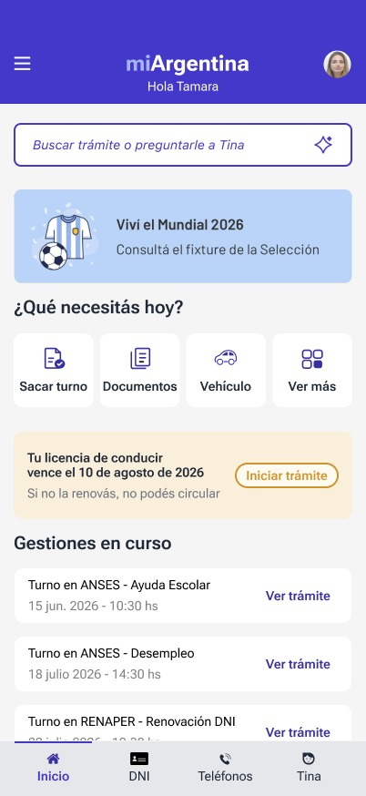
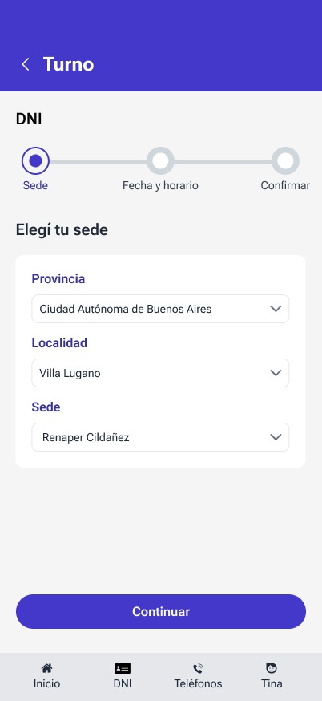
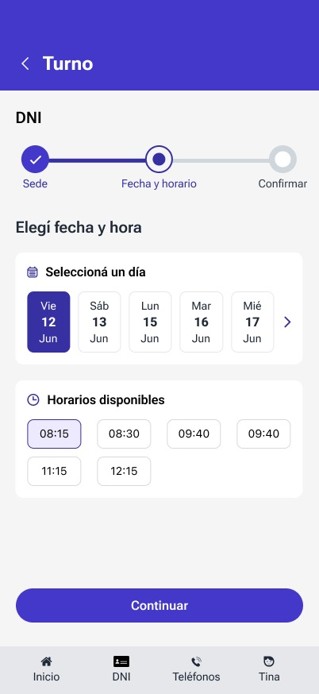
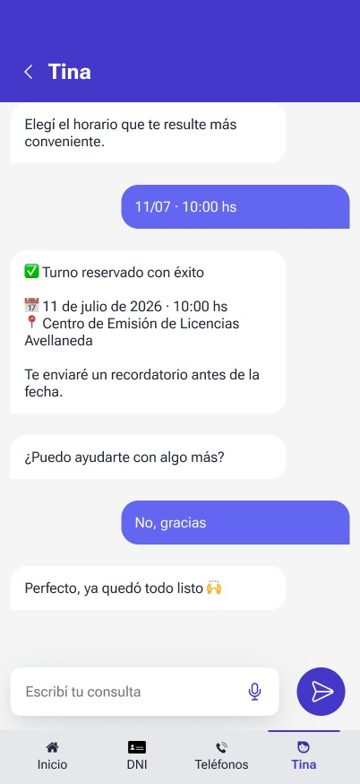

Case Study 04 — Academic Project
Mi Argentina — App Redesign
A UX/UI redesign of Argentina's national government app, built for my UX/UI Diploma at UTN.

👥 Team project — Equipo 22 (Tamara Iglesias, Karen Lafuente, Vanesa Reche), for the UX/UI Diploma at UTN. My focus: UX research, information architecture, visual design, and prototyping — with particular ownership of Tina, the AI assistant flow.
Overview
Mi Argentina is the country's official government app, giving citizens access to procedures, appointments, and personal documents. As our final project for the UX/UI Diploma at UTN, our team of three redesigned the experience end-to-end — from research to a fully interactive prototype.
The Problem
Government procedures are inherently complex, and the existing experience made citizens do all the work of figuring out what they needed and how to get it.
- Hard to find the right procedure — users often didn't know what service they needed or where to start.
- No proactive guidance — expiring documents, like a driver's license, weren't surfaced until it was too late.
- No conversational support — there was no way to ask a question in plain language and get a direct answer.
The app expected citizens to think like the government's org chart — not like people trying to get something done.
My Approach
As a team, we ran user research and rebuilt the information architecture around user intent instead of institutional categories. My individual focus spanned three areas:
- Tina, the AI assistant — I designed and prototyped a conversational flow that guides users through complex procedures, like renewing a driver's license, in plain language.
- The appointment booking flow — I redesigned the end-to-end Turnos flow: selecting a location, choosing a date and time, confirming, and handling errors gracefully.
- Design System contributions — I helped build the shared token system, typography, color, and components used consistently across the whole redesign.


The Turnos flow — selecting a location, then a date and time.

Tina confirming an appointment through natural conversation.
Impact
- A fully interactive, testable prototype covering the core user journeys end-to-end, not just static screens.
- Validated with real users through usability testing before the final delivery.
- Defended in front of faculty as our final diploma project, with research, decisions, and trade-offs presented and justified.
What This Shows
Working in a three-person team on a project this size meant owning a clear piece end-to-end — Tina and the appointments flow — while staying aligned with two other designers on a shared system. It's the same discipline that scales into professional cross-functional work.
Try It Yourself
Explore the live prototype
This is the actual navigable Figma prototype — click through the Home screen, search for a procedure, book an appointment, or chat with Tina.